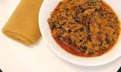
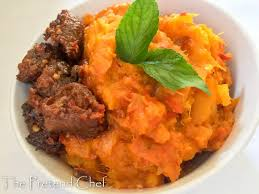

-
Jollof Rice
Jollof rice - A flavorful West African one-pot dish made with rice, tomatoes, onions, peppers, and spices, often sparking a friendly rivalry between Ghana and Nigeria over who makes it best!

-
Eba & Egusi Soup
Eba & Egusi Soup - A classic Nigerian combo! Eba (thick, starchy fufu made from cassava flour) paired with Egusi soup (rich, savory, and slightly bitter, made with ground melon seeds and vegetables) - a match made in heaven!

-
Porridge Yam
Porridge yam - Comfort food at its best!A popular Nigerian dish made with boiled yams cooked in a flavorful broth with vegetables and spices, often served with a sprinkle of love and warmth.